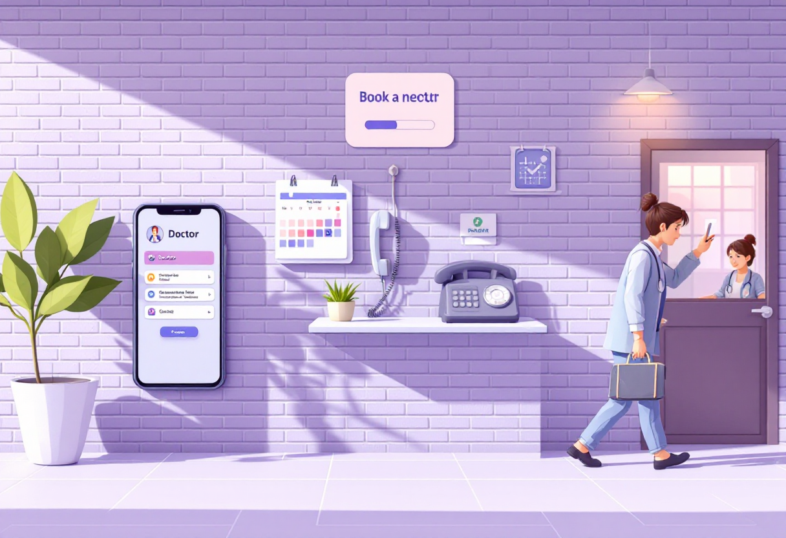
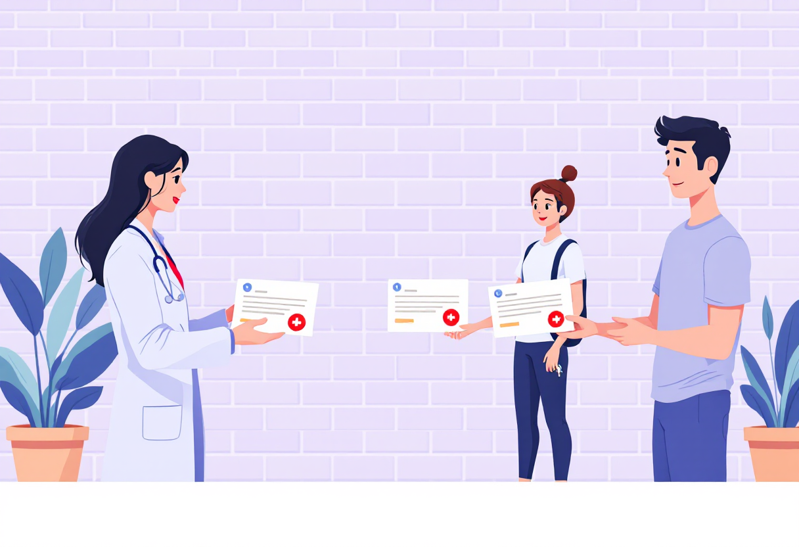

Медицина: FAQ для молоді
Типові питання про записи до лікаря, аналізи, довідки та лікарняні — коротко й зрозуміло.

Як записатись до лікаря
Записатись до свого сімейного лікаря або спеціаліста можна кількома способами.
- Через додаток «Helsi» або сайт helsi.me — найзручніше.
- Через телефон реєстратури медзакладу.
- Особисто у реєстратурі.
- До вузького спеціаліста — спочатку потрібне направлення від сімейного лікаря.
Як здати аналізи безкоштовно
У рамках програми медгарантій частина аналізів і обстежень — безкоштовна для пацієнтів.
- Попроси направлення у свого сімейного лікаря — це ключ до безкоштовних послуг.
- Загальний аналіз крові та сечі, ЕКГ — зазвичай безкоштовно за направленням.
- Без направлення — лише платно у приватних лабораторіях.
- Популярні мережі: «Сінево», «Діла», «МеДіс».

Як отримати довідку
Різні довідки потрібні для різних цілей — роботи, навчання, водійського посвідчення та ін.
- Довідка 086/о (для навчання) — у сімейного лікаря або поліклініці.
- Довідка 083/о (для водійського) — медогляд у ліцензованій установі.
- Лікарняний аркуш — видає лікар при непрацездатності, подається роботодавцю.
- Більшість довідок видається в день звернення або протягом 1–3 днів.
Базові права пацієнта
Знати свої права — важливо. Ось основне, що варто пам'ятати при відвідуванні лікаря.
- Ти маєш право знати свій діагноз і план лікування.
- Лікар зобов'язаний пояснити призначення зрозумілою мовою.
- Можеш відмовитись від лікування або запитати другу думку.
- Медична інформація є конфіденційною — без твоєї згоди її не розголошують.